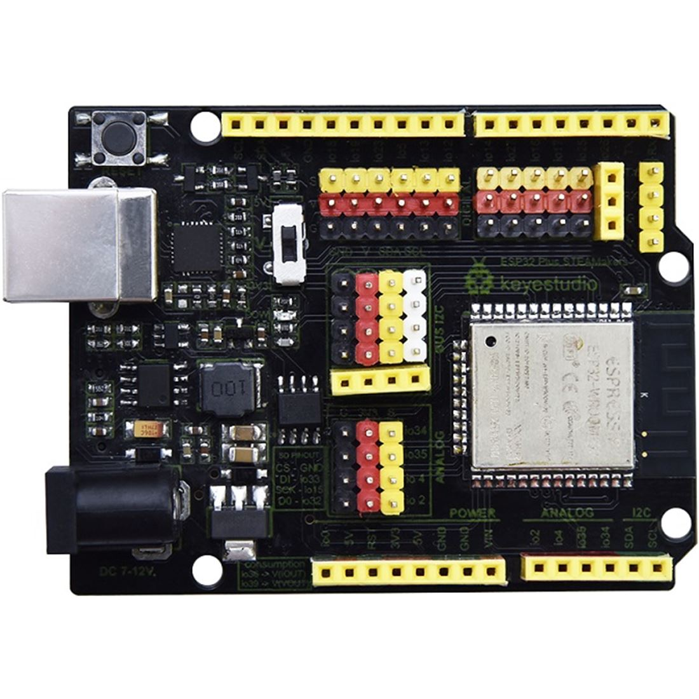
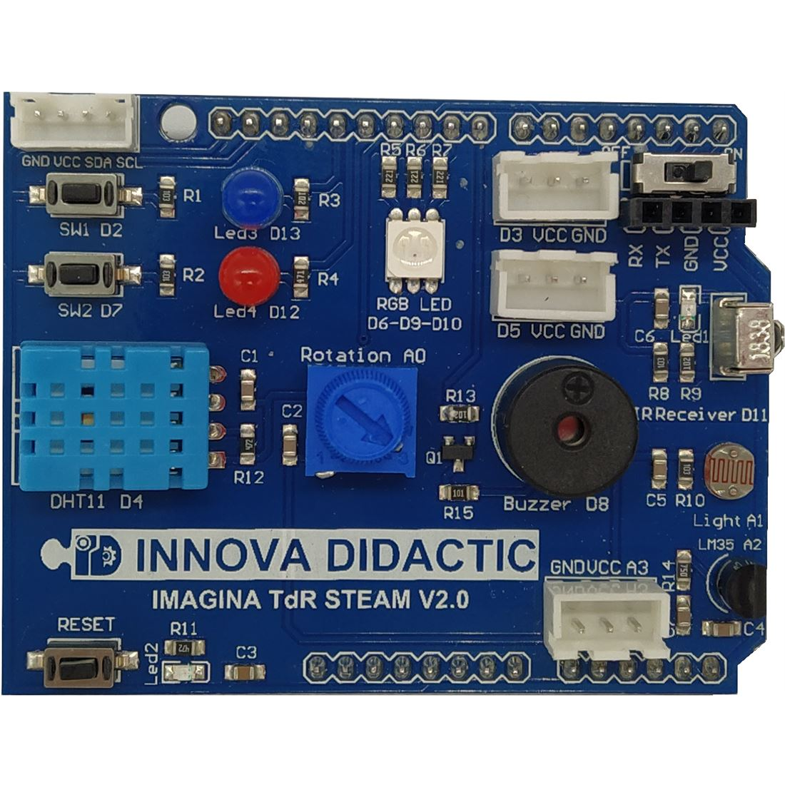

La nueva placa ESP32 Plus STEAMaker nos ofrece una cantidad ilimitada de prestaciones al estar basada en un microcontrolador de 32 bits con conectividad Wifi y Bluetooth integrada en la propia placa y zócalo para tarjetas micro SD para el almacenamiento de datos. También dispone de conexiones para todas las entradas y salidas con posibilidad de tener la alimentación adjunta y puertos de expansión I2C para poder conectar diferentes dispositivos directamente en la placa. La placa está basada en el microcontrolador ESP32-WROOM-32.
Las principales especificaciones técnicas:
- CPU Xtensa LX6
- CPU de 2 núcleos
- Arquitectura de 32 bits
- Frecuencia de trabajo de 160 MHz
- Comunicaciones Wifi y Bluetooth
- Memoria RAM
- Memoria Flash
- 11 conversores Analógico-Digital de 12 bits de resolución
- 2 conversores Digital-Analógico de 8 bits
- Conectividad I2C

IMAGINA TDR-STEAM V2 es una shield o placa didáctica de control desarrollada por el Equipo Robolot.
Las funciones incluidas en esta placa son las siguientes:
- Dos pulsadores SW1 y SW2
- Dos Leds azul y rojo
- Módulo LED a todo color RGB
- Dos puertos digitales (D3 y D5)
- Un puerto de comunicaciones RX / TX
- Sensor de temperatura y humedad DHT11
- Módulo de potenciómetro giratorio
- Módulo zumbador pasivo (Altavoz o Buzzer pasivo)
- Módulo receptor de infrarrojos
- Sensor de luminosidad
- Un puerto analógico (A3)
- Sensor de temperatura LM35
- Un puerto I2C compatible con nuestros módulos I2C (SDA = A4, SCL = A5)
- Un puerto serie TTL
- Botón de reinicio
La programación de esta placa la vamos a realizar con ARDUINOBLOCKS.